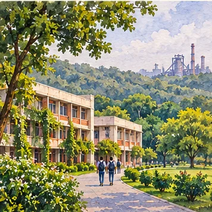
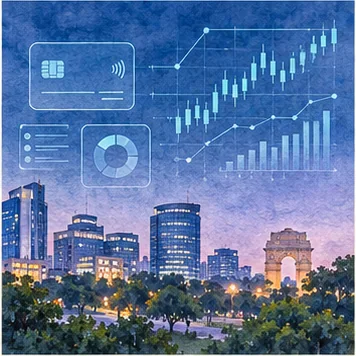
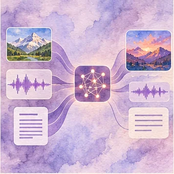

Table of Contents
What would you like to discover about me?
Select a chapter below to explore my engineering journey, AI research, and projects.
Index I
Select a chapter below to explore my engineering journey, AI research, and projects.
“Code, Culture, and Creation — An illustrated chronicle of an AI/ML Engineer.”
Python Developer · AI/ML Engineer · Generative AI
I architect intelligent, production-grade systems at the intersection of Python engineering, machine learning research, and resilient backend architecture. Open to full-time Software Engineering and AI/ML roles as an immediate joiner.
• Production RAG: 4-pass document parsing running stably on 1.9GB EC2 memory.
• Deep Learning: 94% accuracy in acoustic COPD classification with DenseNet & 1D CNNs.
• Data Pipelines: Automated scrapers for 45+ funds with Playwright, GraphQL, & Redis.
“Where mathematical rigor meets the poetry of code and culture.”
Sneha Jha · New Delhi, India
• B.Tech Honours in Data Science, CSVTU Bhilai (2021–2025)
• 2x Published IEEE Researcher in Pulmonary Acoustics (2024)
• Immediate Joiner for Software Engineering & AI/ML
Geographic milestones framing personal and intellectual development.
Born, raised, and schooled in New Delhi. The iconic tree-lined avenues, India Gate, and the vibrant intellectual culture of the capital shaped early formative years, fostering deep curiosity in mathematical logic and computing.
Family roots trace to Bihar, marking ancestral heritage and Mithila cultural traditions. While not born or raised there, this heritage inspires the artistic visual identity of this portfolio.
Bridging mathematical theory with production technology systems.

Undergraduate study at CSVTU Bhilai honed algorithmic foundations, while the fellowship at IIIT Naya Raipur cultivated rigorous scientific experimentation in pulmonary deep learning.
Returned to Delhi to build production-grade Python microservices, multimodal RAG pipelines at Survatra, and fintech intelligence at Blazetrail.
Honours degree study and foundational mathematical data science.
Rigorous 4-year undergraduate curriculum specializing in mathematical probability, data structures, algorithmic design, machine learning foundations, and database engineering.
Focused coursework across Discrete Mathematics, Linear Algebra, Statistical Hypothesis Testing, Distributed Systems, Relational & Vector Databases, and Deep Neural Networks.
Acoustic signal processing and deep convolutional neural networks.
Researched respiratory acoustic classification under institutional faculty mentorship. Architected a custom DenseNet combining 3 CNN models alongside 1D CNNs using Adam and RMSprop optimizers.
Achieved 94% training accuracy with Adam optimizer in detecting COPD from pulmonary recordings. Conducted systematic analysis of 40 papers (2019–2024); published 2 peer-reviewed IEEE papers.
Production backend engineering, fintech development & AI systems.
• Built frontend features for Kaalfi, a fintech mutual fund investment app, using Next.js (App Router), TypeScript, Tailwind CSS, and shadcn/ui.
• Developed mutual fund scanning and filtering pages, fund detail tabs, portfolio dashboard components, and OTP-based authentication flows.
• Contributed to Django REST Framework backend: auth APIs, Redis-backed token management, and database extensions on PostgreSQL.
• Built PDF factsheet scrapers for 45+ mutual fund companies using BeautifulSoup, Playwright, and GraphQL direct API calls.
• Architected and built a multimodal RAG platform using Python/FastAPI, PostgreSQL, and AWS S3, integrating LLM APIs with vector-based semantic retrieval using FAISS and ChromaDB.
• Built document ingestion pipelines for PDFs, CSVs, and scanned files, including a 4-pass extraction workflow that ran stably on a 1.9GB RAM CPU-only EC2 server.
• Implemented PHI/PII masking before LLM calls, replacing sequential multi-pass regex with a single combined alternation regex for faster processing.
• Implemented PHI data governance with a three-level admin approval system, immutable audit trails, and auto-revoking access windows.
• Built multi-project isolation with scoped API keys, per-project chat history, OTP brute-force protection, and HTTP 429 rate limiting.
• Built an NLP-powered chatbot using LangChain, LLM APIs, and structured knowledge bases to guide startup founders through legal, financial, and operational workflows.
• Developed a DenseNet architecture combining three CNN models, and 1D CNN models using Adam and RMSprop, for COPD detection from pulmonary audio (94% training accuracy with Adam).
• Conducted comparative analysis across 40 papers (2019–2024) and published two peer-reviewed IEEE papers: 15th ICCCNT and IEEE TENSYMP 2024.
Hex N Bit (Aug–Sep 2023) · AI & ML Developer: Developed AI/ML prototypes during an early-career industry rotation.
Gauravgo Technologies (Sep 2023) · Web Developer Intern: Gained exposure to web hosting, deployment pipelines, and full-stack web fundamentals.
Hands-on solutions in RAG, LLMs, multi-agent systems, and machine learning.
Survatra production platform: document ingestion, PHI/PII single-alternation masking, FAISS/ChromaDB retrieval, and LLM query routing on FastAPI, PostgreSQL, and AWS EC2.
FAISS + Sentence Transformers semantic search engine with a Flask REST API for natural-language hospitality querying and booking retrieval.
Blazetrail production pipeline: Automated scraping and structured factsheet data extraction for 45+ mutual fund houses via Playwright, BeautifulSoup, and GraphQL.

Hybrid text sentiment + quantitative machine learning models (0.99 accuracy) featuring interactive Streamlit, Flask API, and Grafana monitoring dashboards.
Coordinated Python multi-agent system with a Gradio interface routing user requests by content type and intent to specialized task execution agents.
IIIT Naya Raipur research: COPD detection from acoustic signals using DenseNet and 1D CNNs with Adam and RMSprop (94% training accuracy; 2 IEEE papers).

Real-time multimodal pipeline connecting Gemini 2.0 Flash reasoning, edge-tts neural voice generation, and Wav2Lip lip-synced video rendering.
The Idea Company: Conversational advisor using LangChain, LLM APIs, and curated knowledge bases to navigate legal, financial, and operational startup workflows.
Technical competencies, frameworks & verified toolchains.
Certifications: Build Website With AI · Getting Started with ReactJS Components · Mobile App Development (Android) · High Performance Scientific Computing · Management Information System
Peer-reviewed scientific contributions in pulmonary deep learning.
Presents an optimized 1D convolutional neural network applied directly to digitized respiratory audio signals. Demonstrates that custom kernel sizes effectively capture acoustic crackles and wheezes, outperforming conventional baselines with 94% training accuracy.
Investigates comparative optimizer dynamics (Adam vs. RMSprop) combined with DenseNet feature concatenation across 40 contemporary benchmark studies (2019–2024). Establishes a lightweight diagnostic framework suitable for clinical edge devices.
Open to full-time engineering roles · Immediate joiner.
✉️ Email: jhasneha344@gmail.com
📞 Phone: +91 9818391361
🔗 LinkedIn: linkedin.com/in/sneha-jha-808796261
🐙 GitHub: github.com/Sneha100802
Download Official Résumé (PDF) ↓New Delhi, India
“Handcrafted with semantic HTML5, CSS3 3D transforms, and custom Web Audio synthesis.”